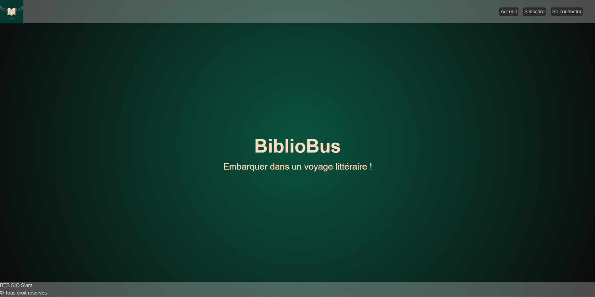

Client Léger bibliobus
Dans le cadre de ma formation en BTS SIO option SLAM, j'ai réaliser un clien léger avec Symfony visant à faire un espace client. Via ce site web il est possible de réserver des livres, de voir les prochains itinéraire du bus, s'abonné pour consulter la liste des livre. Le blibliothécaire de son coté peut noter un livre comme emprunter ou rendu, il peut également voir les livre emprunter pour la prochaine tournée.
Page GithubCette page est l’écran d’accueil pour les utilisateurs non connectés.
On y retrouve les principales options publiques telles que l'inscription avec les tarifs ou la connexion.
Si l’utilisateur a perdu son mot de passe, il peut lancer une procédure de réinitialisation qui lui enverra un email
sécurisé contenant un lien de changement de mot de passe.
Cette interface de départ permet de sécuriser l’accès aux fonctions réservées et de guider efficacement les nouveaux utilisateurs.

Voici l’interface d’accueil d’un utilisateur connecté.
L’utilisateur a désormais accès à de nouvelles fonctionnalités : consulter la liste des livres, effectuer des
réservations, suivre ses prêts, et accéder à son profil personnel. Il peut également contacter le support via un
formulaire.
L’interface est pensée pour permettre à l’usager de gérer son expérience dans la bibliothèque de manière simple et efficace.
Cette capture montre l’accueil d’un administrateur.
En plus des fonctionnalités classiques d’un utilisateur, l’admin dispose d’un accès à un espace d’administration. Il
peut y gérer les utilisateurs, les livres, les réservations ou les tournées.
Cette séparation des droits garantit une application sécurisée, avec des droits spécifiques à chaque rôle. Le
back-office admin permet de piloter l’ensemble de la base et les opérations critiques de la plateforme.